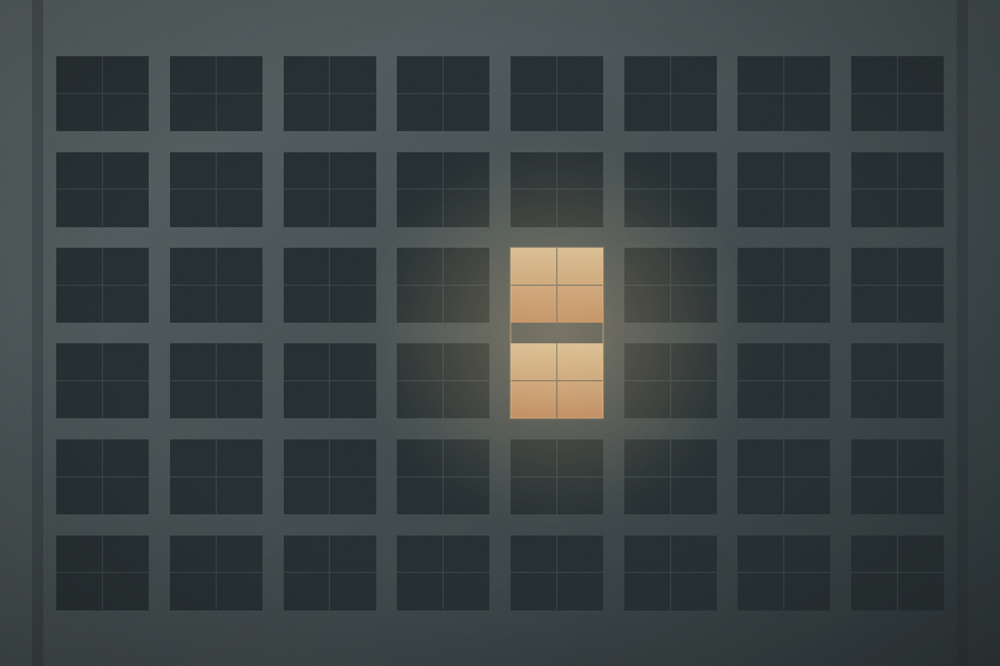
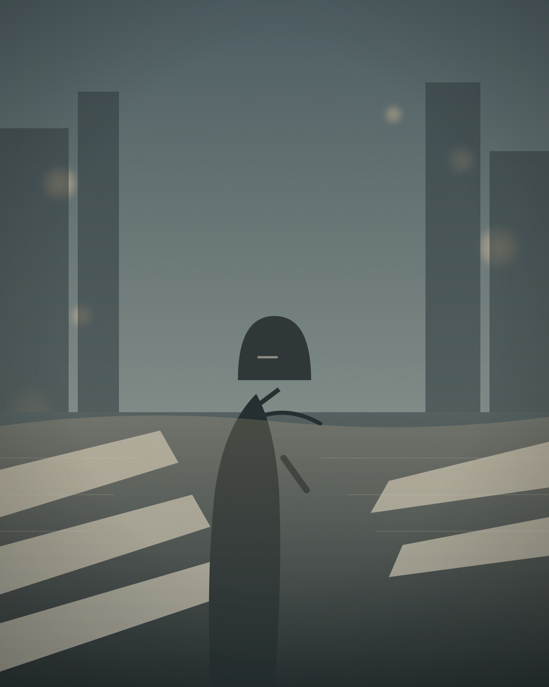
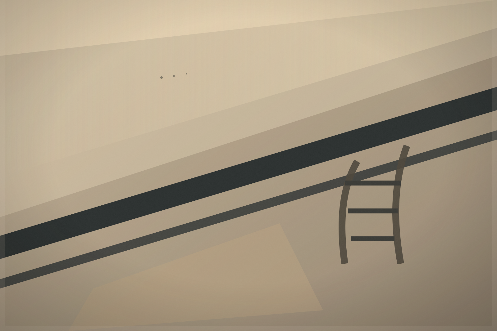
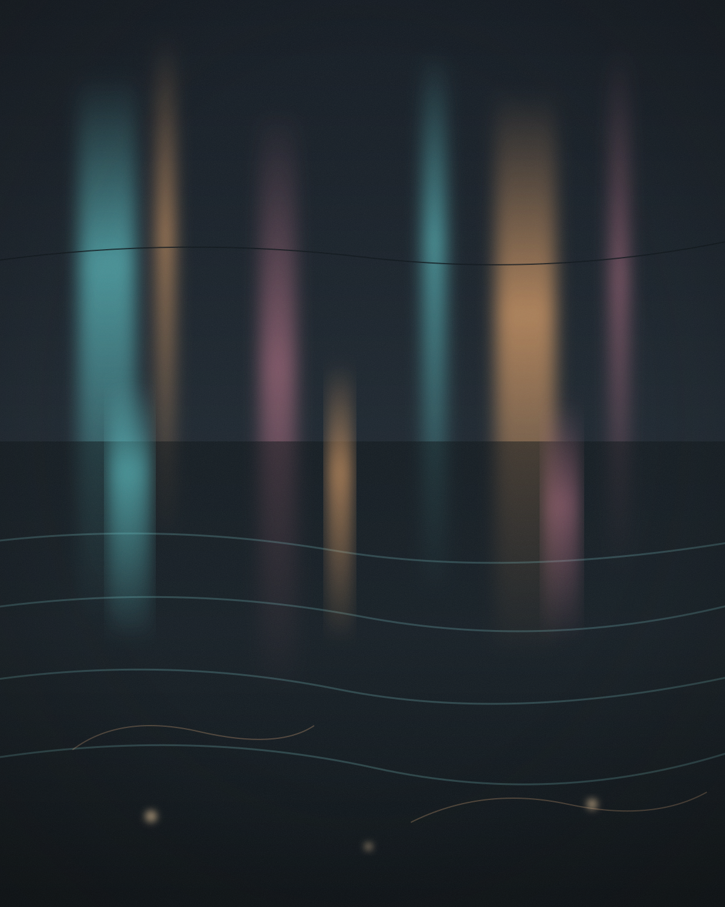

Album 02 / 04 · 2025 夏
城市切片
City Fragments
- 年份
- 2025 年夏
- 地点
- 上海 / 香港
- 影像
- 12 幅（精选 5 幅）
- 页数
- 28 页
- 介质
- 数码 · 35mm
卷首语 / Prologue
城市从不完整。它是无数擦肩而过、来不及命名的切片。
这册影像拍于两个夏天之间的空隙：下班后不愿立刻回家的半小时， 雨停之前站在天桥下的十分钟，以及末班地铁驶过之后，仍亮着的那扇窗。
我不试图概括一座城市，只想保留它偶尔露出的表情。那些表情通常很短， 短到只够按下一次快门。
水上行走 · 2025 年 9 月
Chapter 01Skyline
天际Above the Rooftops
高架把视线带向远方，灯一盏一盏地亮。城市在黄昏里收起棱角， 露出少见的柔软。


“我们与城市的关系，
大多发生在擦肩而过的时候。” 城市笔记 · 七月
Chapter 02The Corner
街角Somewhere in the Rain
雨把街道变成一面镜子，颜色被拉长，行人的脚步变轻。 在路口等灯的时候，每个人都拥有一个小小的世界。


Chapter 03After Dark
夜行Neon and Rain
霓虹落进水洼，变成了另一种颜色。夜晚的城市不睡， 只是把说话的声音调低了一点。

End Note · 02 / 04
城市不会为谁停留，
但总有一扇窗，愿意为晚归的人亮着。
日常的光
The Light of Ordinary Days · 2024—2025